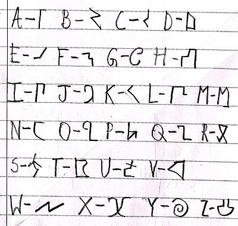

-a society of secrecy-
The original Ihet language was created long ago, in the first term. The Ihet language: Second Edition was created on
18th May, 2026 in the Auriga section by Maher Hossain. Shortly following this, the Ihet society was born.
The Ihet society has 4 ranks - The Ihetians, The Catalysts, The Supersticious Three and -THE OVERSEER-
The identity of the -OVERSEER- is unknown to anyone other then The Supersticious Three.
The Ihetians: The Ihetians are like regular civillians. They can have jobs and are paid by the goverment of Ihet.
The Catalysts: The Catalyst spreads Ihet in his/her section. The Catalyst can recruit new Ihetians.
The Supersticious Three: The Supersticious Three are like the kings of Ihet. They manage the goverment, money etc.
-THE OVERSEER-: -THE OVERSEER- oversees the entire Ihetian society. He/she has FULL AUTHORITY on Ihet.
The Ihet Language is an only-written language. It consists of 26 letters. The Ihet Language is subject to change by authorities at anytime.
There is no numbers in Ihet. The Ihet Language next to their English counterparts are given below:

WARNING!: For the translator to work and to see the Ihet language in any Ihet program, you will have to download the .ttf file.
You can find it in the Ihet Translator guides down below:
Ihet Output
or you can download the .exe setup for Windows here.
The guide for setting up the Ihet translator for Windows is here.